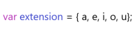

a referencing or universal set, okey how we're going to symblize it?
∪ ?
how we're going to now if a set is determined by extension or understanding?
extension(A) = {a,e,i,o,u};
understanding(B) = {x : x is a member of the argentina's delegation}
we could compare this with objects in javascript
look at this

this is an object iin javascript, where its elements are called properties
this could be an object created by extension as we say unambiguously that elements belong to the object
this image responds to a set determined by understanding
Venn Diagrams

let's now consider the sets
F = {1,2,3,4,5,6} y H = {3,4,5};
as we see all the elements of H are also elements of F
we'll denote it H ⊂ F and you read H conten or subset of F